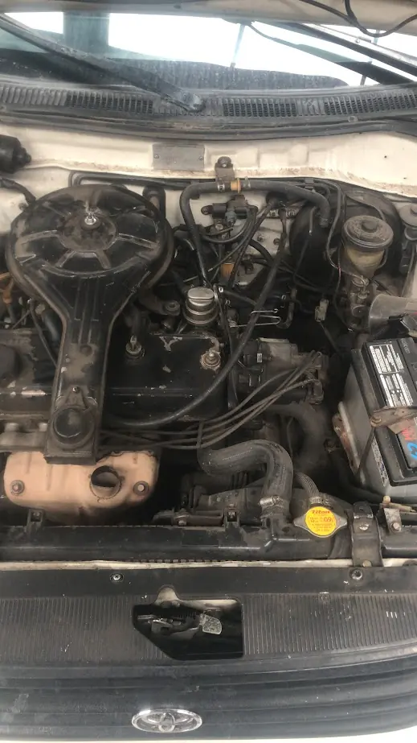

Mecánica general
Mecánica automotriz en Ambato.
Servicio de mecánica general, mantenimiento preventivo y revisión correctiva para cuidar el rendimiento de tu vehículo en Ambato.
Taller mecánico Ambato
Mantenimiento preventivo, diagnóstico y reparaciones generales.
La mecánica general complementa nuestro trabajo principal de enderezada y pintura. En FINECAR Bodyshop revisamos fallas, ruidos, pérdida de rendimiento y servicios preventivos para que el vehículo pueda circular con mayor seguridad.
Atendemos cambios de aceite, filtros, revisión de fluidos, frenos, suspensión, diagnóstico, sistemas eléctricos básicos, limpieza de inyectores, mantenimiento correctivo y ABC de motor. Cuando el caso requiere una inspección más precisa, te indicamos qué conviene revisar presencialmente en el taller.
Si buscas mecánica automotriz en Ambato, un mecanico cerca de mi o un taller automotriz en Huachi Chico, puedes escribir por WhatsApp con el sintoma, marca, modelo y año del vehículo. No ofrecemos servicio de cajas automáticas.
Servicios mecánicos
Reparación de frenos, suspensión y mantenimiento preventivo de motor en Ambato.
- Frenos: revisión de desgaste, ruido, vibración y respuesta al frenar.
- Suspensión: revisión de golpes, inestabilidad, ruidos y desgaste irregular.
- ABC de motor: mantenimiento orientado a recuperar respuesta y funcionamiento del motor.
- Cambio de aceite y filtros: mantenimiento preventivo según kilometraje y condición del vehículo.
- Diagnóstico y sistemas básicos: revisión general, fallas mecánicas y eléctricas comunes.
Caso documentado
Antes y después de trabajo en motor.


Evidencia real
El cliente ve lo que se hizo.
Mostrar el proceso ayuda a diferenciar un taller serio de reparaciones improvisadas. Si tienes una falla, primero revisamos y luego explicamos el trabajo necesario.
Consulta